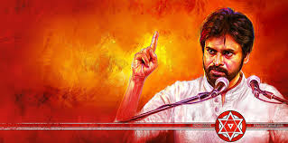

JANASENANI PAWAN KALYAN

The main goal of Jana Sena Party is to question any type of corruption in government functioning and organizations and to protect basic rights of people. Jana Sena follows 7 basic ideals promoted as 'Ideals of Jana Sena' ('Jana Sena Sidhanthalu' in Telugu):
-
Social consciousness without caste
- Politics without religious discrimination
- Reverence for linguistic diversity
- Protection of our traditions and culture
- Nationalism without neglecting regional aspirations
- Relentless fight against corruption
- Progress that preserves the environment
However, there has been confusion around JSP's political philosophy. Despite likening himself to Che Guevara, having communist ideologies, and choosing a red star as his party’s symbol, Kalyan supported BJP in the 2014 elections. However, over the years, he lashed out at the BJP central government for not granting Special Category Status to Andhra Pradesh, multiple times.[10] Again, Jana Sena Party officially enter
Post 2019 Elections and BJP alliance
Jana Sena announced that tying up with Bharatiya Janata Party in Andhra Pradesh, this decision came after Chief minister Y. S. Jagan Mohan Reddy's intention to decentralise the capital, instead of developing Amaravati.